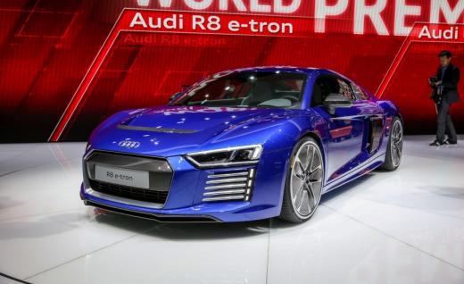
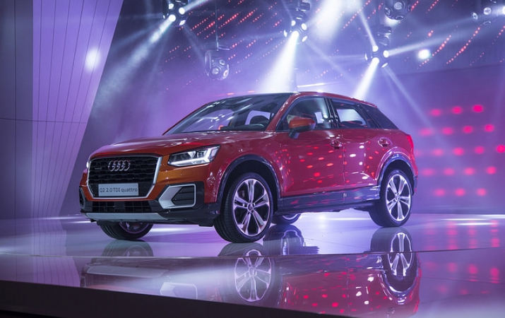

"Audi" pārtrauc elektriskā superauto "R8 e-tron" ražošanu

Kļuvis zināms, ka Vācijas autobūves kompānija "Audi" pārtraukusi superauto "R8" elektriskās modifikācijas "e-tron" ražošana. Lēmums pieņemts tikai pusotru gadu pēc modeļa starta.
Britu mediji, atsaucoties uz saviem ziņu avotiem vēsta, ka "Audi R8 e-tron" ražošana tiek pārtraukta tikai pusotru gadu pēc modeļa starta. Iemesls – aptuveni miljonu eiro vērtā elektriskā supermašīna nav pietiekoši pieprasīta.
"R8 e-tron" oficiālā pirmizrāde notika 2015.gada Ženēvas autoizstādē reizē ar "R8" benzīna modifikāciju. Divus mēnešus vēlāk Šanhajas CES elektronikas izstādē tika nodemonstrēta eksperimentālā e-tron versija ar "Piloted Driving Concept" autonomās braukšanas sistēmu.
"R8 e-tron" piegādes klientiem sākās 2016.gada sākumā un tiek uzskatīts, ka pusotra gada laikā "Audi" varētu būt izgatavojis aptuveni 100 (kompānija par uzbūvēto auto skaitu klusē) elektriskās supermašīnas eksemplāru.
"R8 e-tron" ir komplektēts ar diviem elektromotoriem, kuru kopējā jauda ir 462 ZS. 100 km/h "Audi" varenauto sasniedz 3,9 sekundēs, bet ar pilnībā uzlādētiem akumulatoriem var nobraukt 450 km.
"Latvijas Gada auto testu diena Molā"

"Latvijas Gada auto testu diena Molā" notiks no plkst.11 līdz plkst.18. Jebkuram interesentam ar derīgu autovadītāja apliecību būs iespējams ik pa 20 minūtēm doties testa braucienā un novērtēt apmēram 20 jaunākos auto modeļus - piemēram, "Audi Q2", "BMW X1", "Ford Edge", "Mazda MX-5", "Nissan Qashqai", "Nissan X-Trail", "Renault Megane", "Renault Talisman GrandTour", "Toyota Corolla", "Toyota RAV4 Hybrid", "Volkswagen Passat GTE", "Volkswagen Tiguan", "Volvo S90" u.c.
"Katrs auto izceļas ar kaut ko savu, un katram auto vienmēr būs savs pircējs! Tādēļ ar saukli "Pielaiko savu auto!" īpaši aicinām tos, kuri tuvākajā laikā plāno iegādāties jaunu spēkratu! Šeit būs lieliska iespēja izmēģināt daudzus jaunākos automobiļus vienuviet, kas citkārt prasa atvēlēt diezgan daudz laika vai pat ir neiespējami. Turklāt katrs auto dīleru salons šajā dienā piedāvās īpašas akcijas un cenas," klāstīja konkursa "Latvijas Gada auto" rīkotājs Māris Ozoliņš.
Vienlaikus "Latvijas Gada auto 2017" pārstāvji atgādināja, ka pieteikšanās konkursā turpinās līdz 2.novembrim. "Latvijas Gada auto 2017" titula ieguvējs tiks paziņots 9.decembrī.
Konkurss "Latvijas Gada auto" notiek kopš 1998.gada.